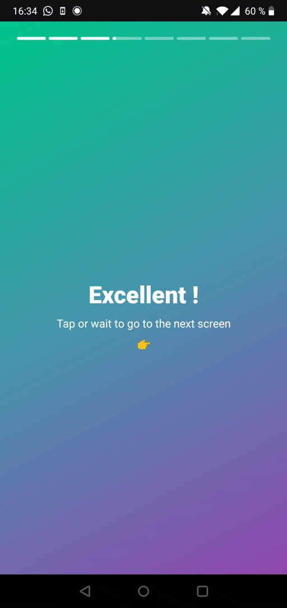

Detect Instagram-like gestures with Jetpack Compose¶
This is the second article of a series about Jetpack Compose.
Note
Posts in this series :
What we'll try to achieve¶
- On press on the 1st left quarter of the screen : go to previous screen.
- On press on the right 3 quarters of the screen : go to next screen.
- On press-and-hold anywhere : pause the progress bar.
- On progress bar finished : go to next screen.

Recreating Instagram's stories screen¶
Let's warm up by using our progress bar in a typical Instagram's like screen.
@Composable
fun InstagramScreen() {
// We will hardcode those parameter for now.
val steps = 5;
val currentStep = 2;
val isPressed = remember { mutableStateOf(false) }
val goToPreviousScreen = {}
val goToNextScreen = {}
Column(
horizontalAlignment = Alignment.CenterHorizontally,
modifier =
Modifier
.background(
Brush.linearGradient( // (1)
colors = listOf(GreenLemon, GreenLeaves, BlueSea), // (2)
start = Offset.Zero, end = Offset.Infinite
)
)
) {
InstagramSlicedProgressBar(steps, currentStep, isPressed.value, goToNextScreen)
Column(
horizontalAlignment = Alignment.CenterHorizontally,
verticalArrangement = Arrangement.Center,
modifier = Modifier.weight(1f)
) {
Text(
text = "Hello world !",
style = Typography.h1,
color = Color.White
)
Spacer(modifier = Modifier.height(8.dp))
Text(
text = "Tap or wait to go to the next screen",
style = Typography.body1,
color = Color.White
)
Spacer(modifier = Modifier.height(8.dp))
Text(
text = "👉",
style = Typography.body1,
color = Color.White
)
}
}
}
- This is the way of creating a linear gradient ! Very useful.
- Use a list of colours that you like.
Mine is :
val GreenLemon = Color(0xFFA9F24D) val GreenLeaves = Color(0xFF00C88C) val BlueSea = Color(0xFF4895AD) val Purple = Color(0xFF9248AD) val RedRaspberry = Color(0xFFE2264C)
Adding gestures¶
Adding gestures to this screen is not very complicated. Jetpack Compose pointerInput modifier is very handful in this situation :
@Composable
fun InstagramScreen() {
// We will hardcode those parameter for now.
val steps = 5;
val currentStep = 2;
val isPressed = remember { mutableStateOf(false) }
val goToPreviousScreen = {}
val goToNextScreen = {}
Column(
horizontalAlignment = Alignment.CenterHorizontally,
modifier =
Modifier
.background(
...
).pointerInput(Unit) { // (1)
val maxWidth = this.size.width // (2)
detectTapGestures(
onPress = { // (3)
val pressStartTime = System.currentTimeMillis()
isPressed.value = true
this.tryAwaitRelease() // (4)
val pressEndTime = System.currentTimeMillis()
val totalPressTime = pressEndTime - pressStartTime // (5)
if (totalPressTime < 200) {
val isTapOnRightTwoTiers = (it.x > (maxWidth / 4)) // (6)
if (isTapOnRightTwoTiers) {
goToNextScreen()
} else {
goToPreviousScreen()
}
}
isPressed.value = false
},
)
}
) {
...
}
}
-
pointerInputinstalls a gesture detector. It is attached to some key. If the key change on recomposition, the previous gesture detector is detached and a new one is created.Here we use
Unitbecause we want to install a permanent gesture detector. -
We can retrieve the Composable's width inside a
PointerInputScope! Wow ! -
detectTapGestures'sonPressattribute is what we need to detect custom on-press behaviours. It expects a suspend function and provide in its scope a suspendableawaitReleaseandtryAwaitReleasefunctions.Those functions pause the coroutine execution until the user releases its gesture !
-
We wait for the user to release its gesture.
Setting up the navigation¶
We can easily set up a navigation with the androidx.navigation:navigation-compose package.
implementation("androidx.navigation:navigation-compose:2.4.0-alpha03")
Here is our entry point :
@Composable
fun Navigation() {
val navController = rememberNavController()
NavHost(navController = navController, startDestination = "instagram/{steps}/{currentStep}") { // (1)
composable( // (2)
"instagram/{steps}/{currentStep}",
arguments = listOf(
navArgument("steps") { type = NavType.IntType; defaultValue = 8 }, // (3)
navArgument("currentStep") { type = NavType.IntType; defaultValue = 1 }, // (4)
)
) { backStackEntry -> // (5)
InstagramScreen(
navController,
backStackEntry.arguments!!.getInt("steps"),
backStackEntry.arguments!!.getInt("currentStep"),
)
}
}
}
- Here we declare our router. Its start destination is
instagram/{steps}/{currentStep}. - We declare a route. There are some navigation params :
stepsandcurrentStep. stepsis anInt; we can use a default value.currentStepis anInt; we can use a default value.- We pass down our navigation params thanks to
backStackEntryargument.
Remember our hardcoded values ? Let's change those :
@Composable
fun InstagramScreen(navController: NavController, steps: Int, currentStep: Int) {
val goToNextScreen = {
if (currentStep + 1 <= steps) navController.navigate("instagram/$steps/${currentStep + 1}")
}
val goToPreviousScreen = {
if (currentStep - 1 > 0) navController.navigate("instagram/$steps/${currentStep - 1}")
}
...
}
Here you go !
The final result is here :